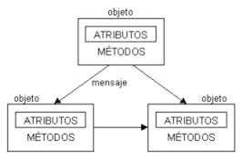

DESARROLLO WEB CON PHPOO y el Patrón MVC
Coop. de Trabajo Tecnomatica Ltda.
Matrícula INAES: 47735
Introducción
"Cualquier idiota puede escribir codigo que un ordenador entienda, los buenos programadores escriben codigo que los humanos pueden entender"
Paso 1
Introducción a la Programacion Orientada a Objetos
Introduccion
La POO es un paradigma de programación (o técnica de programación) que utiliza objetos e interacciones en el diseño del sistema.

Elementos de la POO
La POO esta compuesta por una serie de elementos que se detallan a continuacion:
Elementos de la POO: Clase
Una clase es un modelo que se utiliza para crear objetos que comparten un mismo comportamiento.
class Persona(){
#Propiedades
#Metodos
}
Elementos de la POO: Objeto
Es una entidad proviste de métodos o mensajes a los cuales responde (Comportamiento), atributos con valores concretos (estado); y propiedades (identidad).
$persona = new Persona();
Elementos de la POO: Método
Es el algoritmo asociado a un objeto que indica la capacidad de lo que éste puede hacer
function caminar() {...}
Elementos de la POO: Propiedades y atributos
Las propiedades y atributos, son variables que contienen datos asociados a un objeto.
$nombre = 'Juan';
$edad = '25 años';
$altura = '1,75 mts.';
Evento y Mensaje
Un evento es un suceso en el sistema mientras que un mensaje es la comunicación del suceso dirigido al objeto.
Caracteristicas conceptuales de la POO
La POO debe guardar ciertar caracteristicas que la identifican y diferencian de otros paradigmas de programacion. Dichas caracteristicas se describen a continuación
Abstracción
Aislacion de un elemento de su contexto. Define las caracteristicas esenciales de un objeto
Encapsulamiento
Reúne el mismo nivel de abstracción, a todos los elementos que puedan considerearse pertenencientesa una misma entidad.
Modularidad
Caracteristica que permite dividir una aplicación en varias partes mas pequeñas (denominada modulos), independientes unas de otras.
Ocultación (aislamiento)
Los objetos estan aislados del exterior, protegiendo a sus propiedades para no ser modificadas por aquellos que no tengan a accder a los mismas.
Polimorfismo
Es la capacidad que da a diferentes objetos, la posibilidad de contar con métodos, propiedades y atributos de igual nombre, sin que los de un objeto interfieran con el de otro
Herencia
Es la relación existente entre dos o mas clases, donde una es la principal (madre) y otras son secundarias y dependen (heredan) de ellas (clases "hijas"), donde a la vez, los objetos heredan las caracteristicas de los objetos de los cuales heredan
Recolección de basura
Es la técnica que consiste en destruir aquellos objetos cuando ya no son necesarios, liberándolos de la memoria.
Paso 2
Programación Orientada a Objetos en PHP 5
Definición de Clase
[...] “una colección de variables y funciones que trabajan con estas variables. Las variables se definen utilizando var y las funciones utilizando function” [...]
[...] “La definición básica de clases comienza con la palabra clave class, seguido por un nombre de clase, continuado por un par de llaves que encierran las definiciones de las propiedades y métodos pertenecientes a la clase. El nombre de clase puede ser cualquier etiqueta válida que no sea una palabra reservada de PHP. Un nombre válido de clase comienza con una letra o un guión bajo, seguido de la cantidad de letras, números o guiones bajos que sea.” [...]
class NombreClase {...}
Clases Abstractas
Las clases abstractas son aquellas que no necesitan ser instanciadas pero sin embargo, serán heredadas en algún momento. Se definen anteponiendo la palabra clave abstract a class:
abstract class NombreClaseAbstracta {...}
Herencia de Clases
Los objetos pueden heredar propiedades y métodos de otros objetos. Para ello, PHP permite la “extensión” (herencia) de clases, cuya característica representa la relación existente entre diferentes objetos. Para definir una clase como extención de una clase “madre” se utiliza la palabra clave extends.
class NombreDeMiClaseMadre {
#...
}
class NombreDeMiClaseHija extends NombreDeMiClaseMadre {
}
/* esta clase hereda todos los métodos y propiedades de
la clase madre NombreDeMiClaseMadre
*/
Objetos en PHP5
Una vez que las clases han sido declaradas, será necesario crear los objetos y utilizarlos.
Instanciar una clase
Para instanciar una clase, solo es necesario utilizar la palabra clave new. El objeto será creado, asignando esta instancia a una variable (la cual, adoptará la forma de objeto). Lógicamente, la clase debe haber sido declarada antes de ser instanciada, como se muestra a continuación:
# declaro la clase
class Persona {
#...
}
# creo el objeto instanciando la clase
$persona = new Persona();
Propiedades en PHP5
Las propiedades representan ciertas características del objeto en sí mismo. Se definen anteponiendo la palabra clave var al nombre de la variable (propiedad):
class Persona {
var $nombre;
var $edad;
var $genero;
}
Las propiedades pueden gozar de diferentes características, como por ejemplo, la visibilidad: pueden ser públicas, privadas o protegidas.
Propiedades Públicas
Propiedades públicas Las propiedades públicas se definen anteponiendo la palabra clave public al nombre de la variable. Éstas, pueden ser accedidas desde cualquier parte de la aplicación, sin restricción.
class Persona {
public $nombre;
public $genero;
}
Propiedades Privadas
Las propiedades privadas se definen anteponiendo la palabra clave private al nombre de la variable. Éstas solo pueden ser accedidas por la clase que las definió.
class Persona {
public $nombre;
public $genero;
private $edad;
}
Propiedades Protegidas
Las propiedades protegidas pueden ser accedidas por la propia clase que la definió, así como por las clases que la heredan, pero no, desde otras partes de la aplicación. Éstas, se definen anteponiendo la palabra clave protected al nombre de la variable:
class Persona {
public $nombre;
public $genero;
private $edad;
protected $pasaporte;
}
Paso 3
Patrón Arquitectónico MVC
Introducción
MVC, son las siglas de modelo-vista-controlador (o en ingles, model-view-controller), que es uno de los tantos patrónes de arquitectura de software.
Arquitectura de software
"La Arquitectura de software es la forma en la que se organizan los componentes de un sistema, interactúan y se relacionan entre sí y con el contexto, aplicando normas y principios de diseño y calidad, que fortalezcan y fomenten la usabilidad a la vez que dejan preparado el sistema, para su propia evolución".
Tendencias de la Arquitectura de software
- La Arquitectura de Sofware Orientada a Objetos (como 'ingeniería' de sistemas.
- La Arquitectura Estructurada (como 'desarrollo' de una aplicación.
Características de la Arquitectura de Software
(durante la ejecución)
- Disponibilidad
- Confidencialidad
- Funcionalidad
- Desempeño
- Confiabilidad
- Seguridad externa
- Seguridad interna
Características de la Arquitectura de Software
(preceso de desarrollo)
- Configurabilidad
- Integrabilidad
- Integridad
- Interoperabilidad
- Modificabilidad
- Mantenibilidad
- Portabilidad
- Reusabilidad
- Escalabilidad
- Testeabilidad
Arquitectura de Software
De lo general a lo particular
- El estilo Arquitectónico
- El Patrón Arquitectónico
- El Patrón de diseño
El Patrón MVC
Es un patrón de arquitectura de software encargado de separar la lógica de negocio de la interfaz de usuario.
El Patrón MVC
MVC divide las aplicaciones en tres niveles de abstracción
- Modelo
- Vista
- Controlador
¿Cómo funciona el patrón MVC?

¿Cómo funciona el patrón MVC?
- usuario realiza una petición
- controlador captura el evento
- llamada al modelo
- el modelo será el encargado de interactuar con la BD
- controlador recibe la información y la envía a la vista
- la lógica de la vista, una vez procesados los datos, los entregará al usuario
El Patrón MVC en PHP
El Modelo
La Vista
El controlador
FIN
Capacitador: A.P.U. OCHOA, Carlos Fabián